花香小城
Prologue横州市，广西南宁代管的县级市，古称横州，建制一千三百年。地处北回归线以南，雨量充沛、日照充足、土壤富硒——这本是种什么长什么的土地，却偏偏被一朵小白花选中，长成了"全球最大的茉莉花和茉莉花茶生产基地"。
横州与茉莉的缘分已续了五百多年。自 1978 年大规模种植算起，四十余年深耕，让"中国茉莉之乡""世界茉莉花都"从口号变成了坐标：张一元、吴裕泰的茉莉花茶原料大多来自这里，星巴克、奈雪的茉莉饮品也一样——你喝到的每一口茉莉香，大概率都来自横州的花田。
2024 年，横州"茉莉闻香之旅"入选广西旅游 100 条精品线路；世界茉莉花大会连续多年列入中国—东盟博览会系列活动。这座小城把一朵花做成了一条从田间到全球的产业链，也做成了一张请柬——邀你来看看花开的样子。
茉莉花都
Jasmine Capital看花、采花、买花、窨茶、赴会——在横州，茉莉是一种旅行方式。
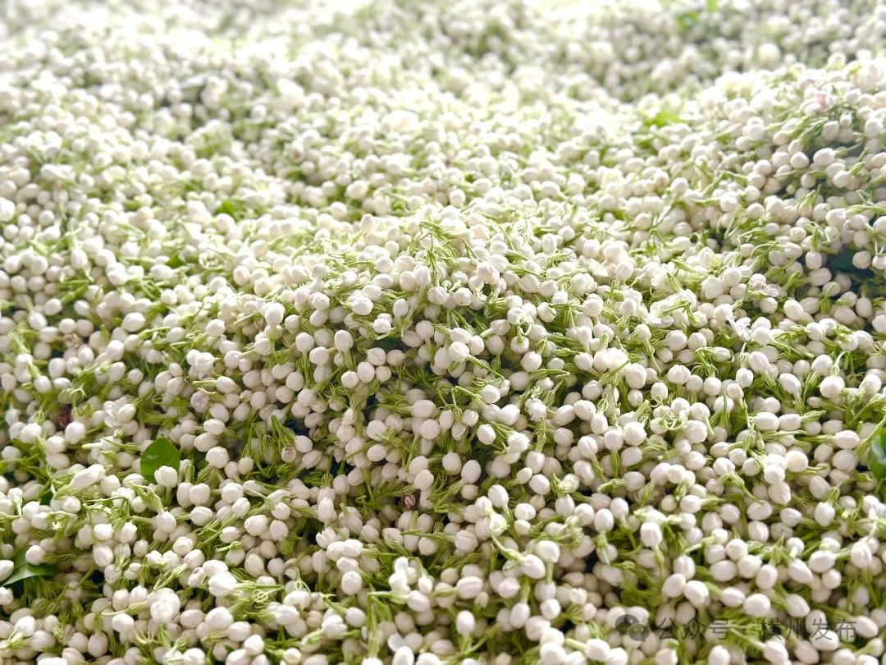
中华茉莉园 · 万亩花海
位于校椅镇石井村，建有 5000 亩茉莉花种植示范基地、莲石湖、茉莉花文化长廊与品种园。每年 4 月至 10 月底的花期，置身万亩花海，"翠丛万点晴雪"，馨香四溢。
花农清晨采花，午后交易，傍晚进窨——一天之内，你能看到一朵花走完全部旅程。
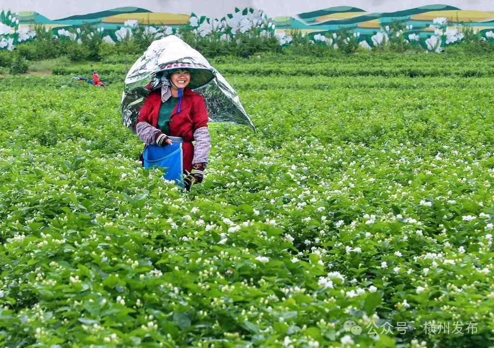
一朵花的 全球集散
石井村的茉莉花交易市场，是全国茶商的"朝圣地"。智能秤称重、扫码即付，花款秒到账；旺季日交易鲜花数十万斤。北京、山东、四川、陕西的客商在此常住收花。
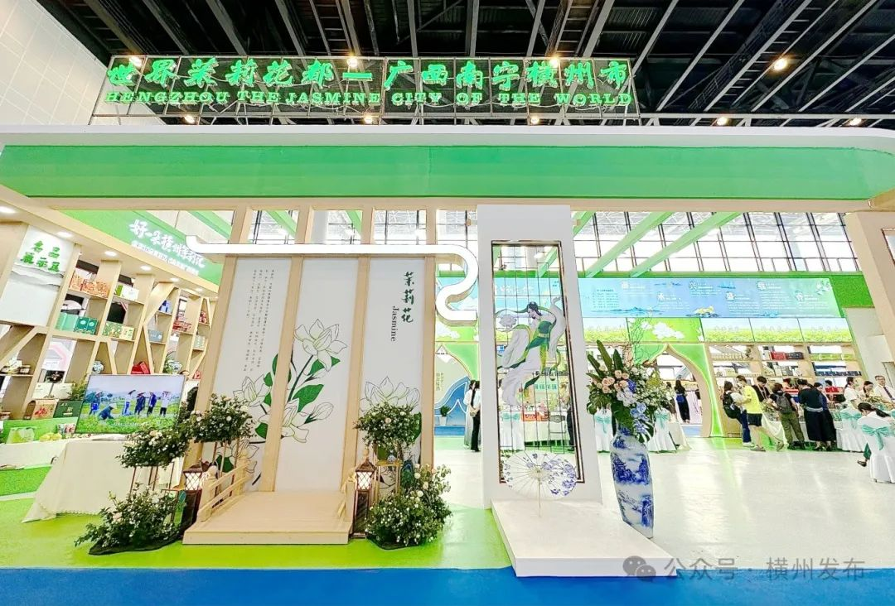
"1+9" 花香帝国
以茉莉花茶为核心，横州拓展出盆栽、食品、旅游、用品、餐饮、药用、体育、康养九大业态：茉莉脆皮鸡、茉莉香皂、茉莉香水……连退出生产的老花树桩，也被改造成千元级艺术盆景。
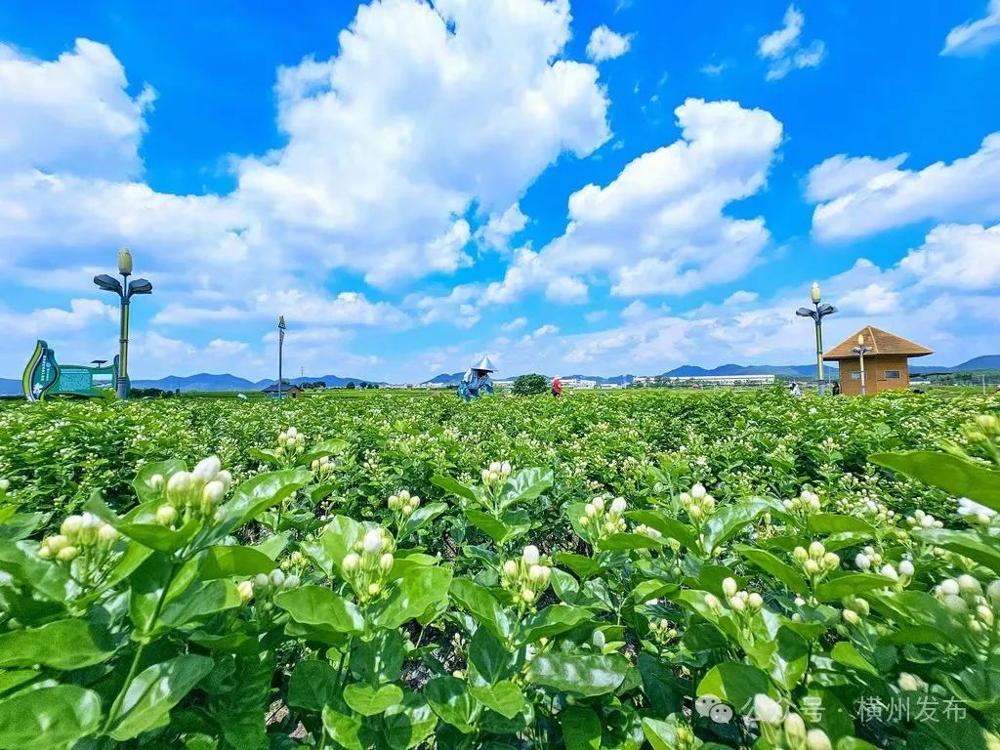
世界茉莉花 大会
2000 年以来，横州连续承办 13 届全国茉莉花茶交易博览会、12 届茉莉花文化节；2019 年起，世界茉莉花大会列入中国—东盟博览会系列活动，横州茉莉花茶多次作为国礼茶赠予外宾。
影像横州 HENGZHOU ON FILM
两段视频由家乡提供，记录横州的花、山水与人。
山水生态
Nature & Scenery花田之外，横州还有一山一水一湿地：瀑布成群的原始森林、华南最大的人工湿地，和一座会发光的湖。
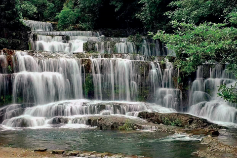
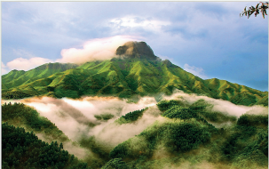
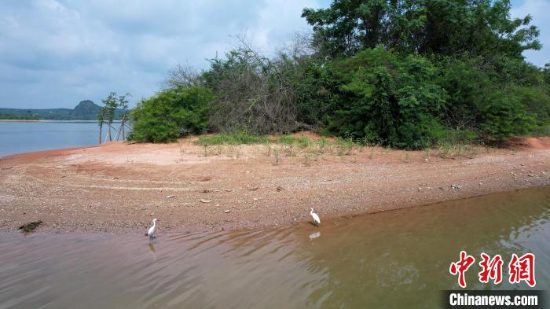
九龙瀑布群国家森林公园位于大圣山南麓，森林覆盖率 87.8%，亚热带雨林郁郁葱葱。"群龙迎宾、双龙戏珠、白龙出潭……"九条瀑布各据一潭，雅称"九龙"，是AAAA 级景区、国家级森林公园，也是天然的避暑氧吧。
西津国家湿地公园因 20 世纪 50 年代末建成的西津水电站而成湖，是华南地区面积最大的人工湿地之一。泛舟湖上可观"西津晚霞、渔歌晚唱"；1964 年，周恩来总理曾为西津电站赋诗——"指点邕江变古今，西津灯火照天心"。
千古人文
Heritage横州古八景今犹在——最负盛名的一处，藏在郁江的险滩之上。
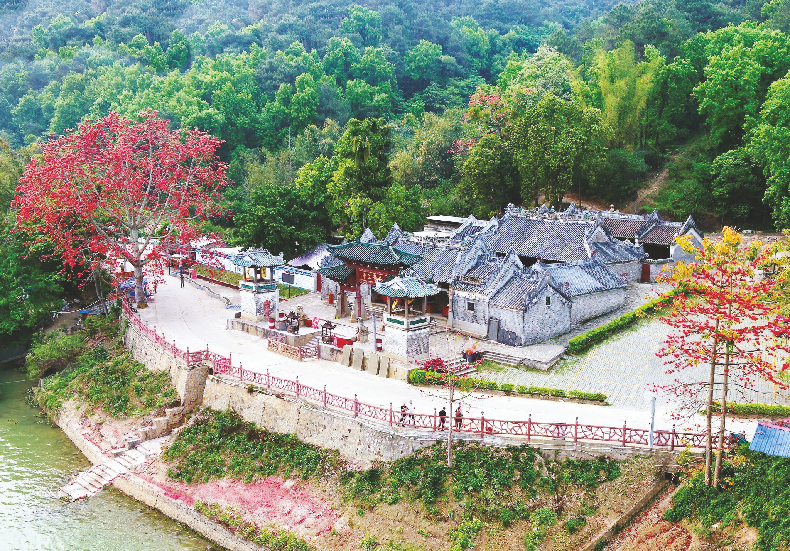
伏波庙 · 乌蛮积翠
郁江乌蛮滩北岸，为纪念东汉伏波将军马援南征交趾、疏河通航而建。现存建筑为明清遗构，是广西仅存的五座明代木构架建筑之一，也是两广规模最大、保存最完好的马援纪念地。2013 年列入全国重点文物保护单位。
庙有二奇：其一"瓦顶不积落叶"，任凭西风卷叶，大殿屋顶片叶不留；其二"乌蛮积翠"，青山绿水江滩古庙互相映衬，位列横州古八景。每年农历四月十四伏波诞辰，数万船民香客溯江而来，庙会已列入自治区级非遗。
风味物产
Taste of Hengzhou"没有一条鱼可以活着游出横州"——在这座把刀工当艺术的城里，吃，是最高规格的待客之道。
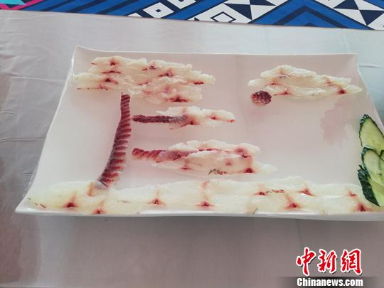
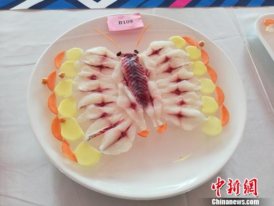
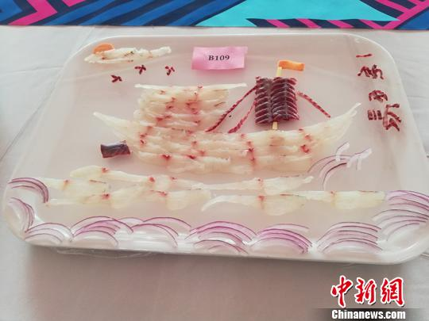
出行锦囊
Travel Tips从南宁出发 1 小时车程，把两天交给花香。
怎么去GETTING THERE
自驾经南横高速（双向八车道）约 1 小时；或经湘桂铁路/黎钦铁路至横州站。西江黄金水道横贯全境，平陆运河起点即在横州——水陆皆可达。
什么时候来WHEN TO VISIT
4–10 月是茉莉花期，5 月开采季有"开游、开宴、开唱"系列活动；夏季宜避暑九龙瀑布，冬季可观西津候鸟。农历四月十四别错过伏波庙会。
两日线路SUGGESTED ROUTE
- Day 1 中华茉莉园 → 茉莉极萃园 → 周顺来花茶展览馆 → 西津湖日落
- Day 2 西津国家湿地公园 → 圣茶谷茶园 → 九龙瀑布群 → 老城夜市觅味